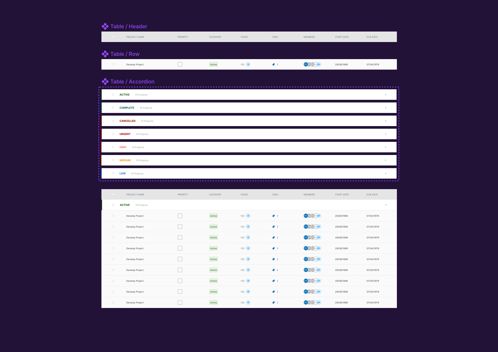
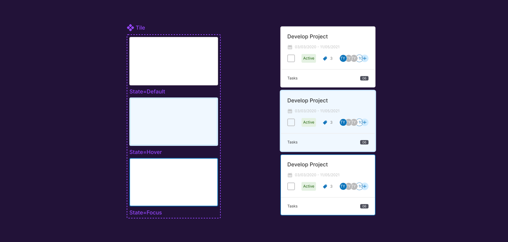
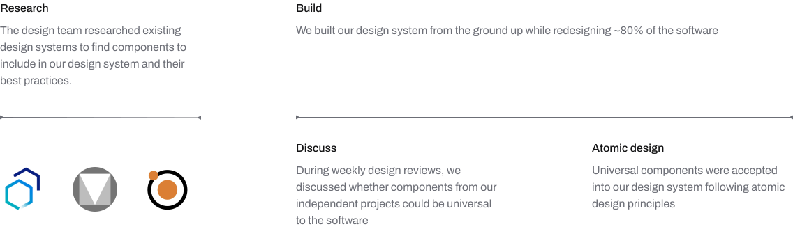
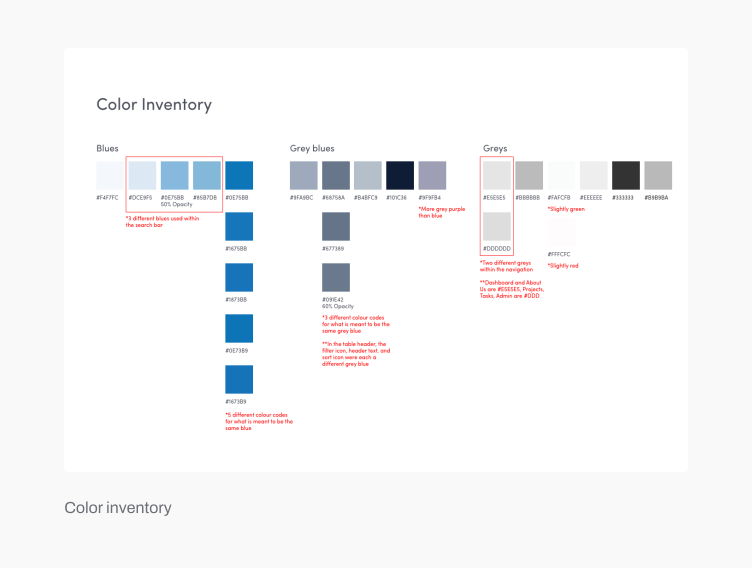
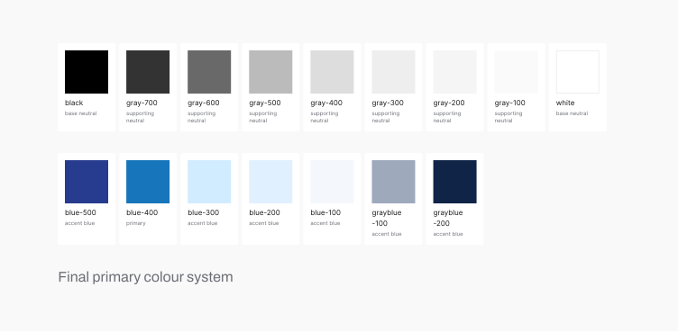
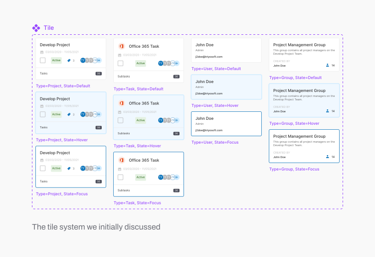
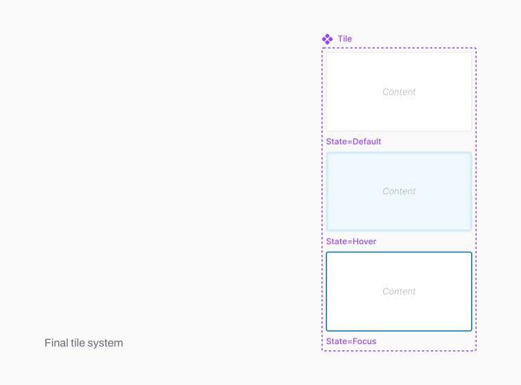
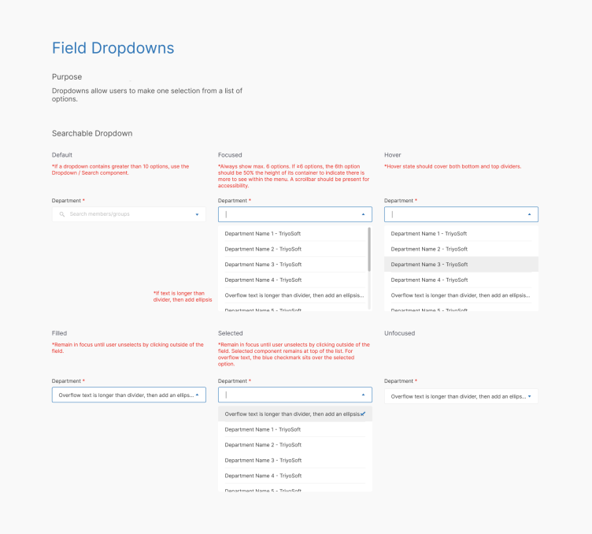

Timeline
2 months
Team
UI/UX Designer (4)
Engineer (2)
Product Manager
Company
Triyosoft
Tool
Adobe XD
Triyosoft builds software to help legal and financial organizations collaborate on projects. From January to April 2021, I was a UI/UX design intern at Triyosoft and 1 of 2 full time designers on the team. We were both interns.
While I was interning at Triyosoft, we were in the process of redesigning ~80% of the software. This provided an opportunity to simultaneously build a design system from the ground up.
It was now easy to update instances of a component across all design files by updating the library.

We agreed we were spending too much time updating component instances.
Instances of a component were not linked to the main component. Each instance had to be updated individually, which became repetitive. Within the second week of my internship, I was working on average 1+ hours overtime updating component instances.
We agreed we were spending too much time finding the correct styles for each component instance.
I was searching old design files for other instances of a component to find the correct styling. Because of minor inconsistencies, I often had to search for more than one instance so I could verify which styles to use. This process took an estimated 20+ min per component.
Management agreed they were spending too much time onboarding new design interns.
Because members of the full-time design team were all interns, design turnover at the organization occurred every four months. Managers on the product team noticed interns would ask or be confused about styling patterns or best practices. This often prolonged design onboarding by 1 extra week
Engineering teams agreed they were spending too much time asking designers for specs and assets.
Members of the engineering team noticed the handoff process was confusing. The team would chase designers down for missing assets. In a remote office setting, this delayed development by an estimated 15+ min per question.

Insight
As we prototyped our projects, we noticed we were asking each other what colours to use so we could be consistent with one another while working on our independent projects. We realized establishing colours in our design system was a top priority and needed to do so before starting any independent project work.
Solution
Using Chrome developer tools, we conducted an inventory of all the colours currently used in the software and grouped hexcodes that we felt were intended to be the same colour. The inventory was used to create a final colour system of primary colours. We filled in the gaps as we prototyped if we required more or less contrast.


Insight
Some of components were making our system difficult to scale. For example, as we redesigned more of the software, we noticed the tile system we initially discussed could potentially blow up.

Solution
When this happened, we applied atomic design principles. We needed a tile component, but what was universal was the tile itself, not its contents. Tile contents could differ depending on its context of use, but border styles and states should be universal.

Insight
Even after components were documented in Adobe XD, we noticed engineers still had follow-up questions relating to edge cases, e.g. How might we handle scrolling behaviour in a dropdown menu? After researching best practices from companies like IBM and Google, we realized some components would need more detailed specs than others.
Solution
For edge cases deemed high-priority by our engineering team, we documented additional notes for their reference.

Because the design team was building the design system while working on our independent projects, we could simultaneously verify the usability and universality of our new components.
We noticed towards the end of our internship that questions from engineers could be quickly and successfully answered by directing them to the design system file. Overtime, styling-related questions decreased as engineers became accustomed to our single source of truth.
Taking the initiate to advocate for my own well-being as a designer
This wasn’t a project that was assigned to us. In fact, we already had a very intense workload and we were really worried how the team would react to our project proposal. But it was impossible to do good design work without a design system. We wanted to give our users a consistent experience, but simple UI decisions would take 20+ minutes when they could take seconds. Overall, I’m proud to have advocated for myself, while recognizing the needs of the organization, and taking those into consideration as well as we proposed this project.
Design systems are never really complete
The state of our design system is nowhere near IBM’s Carbon Design System or Google’s Material 3. But even these well-established design teams are constantly updating their design systems. As a product grows and evolves, so will the needs of the people who design and build the product.